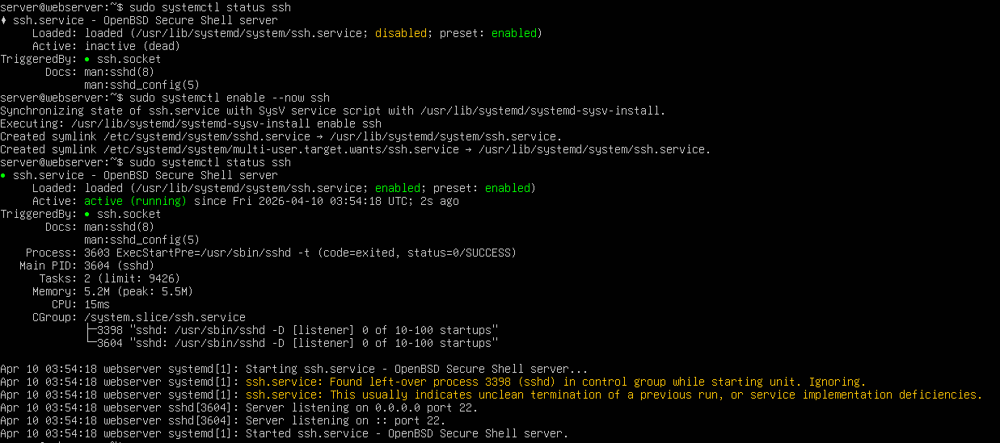

Configure Ubuntu Server
After Ubuntu Server is installed and rebooted, prepare it for hosting by installing a few useful tools, assigning a static IP, and making sure SSH is ready. This page also covers DHCP, Samba, local DNS (dnsmasq), and Squid proxy setup for a complete multi-service environment.
Install Useful Tools
Install a few standard utilities you'll use while managing the server:
curlandwgetfor downloading filesnet-toolsfor network diagnostics likeifconfightopfor live system monitoringnanoandvimfor text editing
sudo apt install -y curl wget net-tools htop nano vimVerify Installation
Check that the server is running the expected kernel and architecture:
uname -aYou should see output similar to Linux webserver ... 6.8.0-... #1 SMP ... x86_64 GNU/Linux.
Network Configuration — Understanding Your Network Setup
This guide assumes a dual-NIC setup:
- enp1s0 (or similar): Internet connection (to main access point or router)
- enp2s0 (or similar): Local network (to switch for DHCP clients)
Step 1: Identify your network interfaces:
ip link showYou should see output such as:
2: enp1s0: <BROADCAST,MULTICAST,UP,LOWER_UP> ...
3: enp2s0: <BROADCAST,MULTICAST,UP,LOWER_UP> ...Note your interface names — they may be ens0, eth0, or similar.
ip link show. Keep local console access available while you test changes.
Configure Static IP with Netplan
Edit the Netplan file (this example uses 50-cloud-init.yaml):
sudo nano /etc/netplan/50-cloud-init.yamlReplace the file content with a static configuration — update interface names and IPs as needed:
network:
version: 2
renderer: NetworkManager
ethernets:
enx000ec645df3f:
addresses:
- 192.168.0.105/24
nameservers:
addresses: [8.8.8.8, 8.8.4.4]
routes:
- to: default
via: 192.168.0.1
dhcp4: false
wlp1s0:
addresses:
- 192.168.1.1/24
dhcp4: falseImportant: Replace enx000ec645df3f and wlp1s0 with your interface names. Adjust the IP addresses and gateway to match your network. In this example, one interface is the Internet uplink and the other provides the local DHCP network.
Save and exit: Ctrl+X, then Y, then Enter.
Fix file permissions
sudo chmod 600 /etc/netplan/00-installer-config.yamlApply and validate
sudo netplan applyVerify interfaces have IPs
ip addr showYou should see both interfaces with their configured addresses, for example:
2: enp1s0: ...
inet 192.168.100.131/24 ...
3: enp2s0: ...
inet 192.168.1.1/24 ...Test connectivity
ping -c 4 8.8.8.8
ping -c 4 192.168.100.1If both pings succeed, your uplink and local network are functioning.
Enable and Verify SSH
Make sure SSH is running so you can manage the server remotely:
sudo systemctl enable --now ssh
sudo systemctl status sshYou want to see active (running) in the service status. If it is not active, start it again and check for errors before moving on.

DHCP Server Setup (ISC DHCP)
Install the ISC DHCP server and configure a subnet for local clients.
sudo apt install -y isc-dhcp-server
sudo nano /etc/dhcp/dhcpd.confAdd (or replace) a subnet block at the end of /etc/dhcp/dhcpd.conf:
subnet 192.168.1.0 netmask 255.255.255.0 {
range 192.168.1.50 192.168.1.200;
option routers 192.168.1.1;
option domain-name-servers 8.8.8.8, 8.8.4.4;
default-lease-time 600;
max-lease-time 7200;
}Set the server interface in /etc/default/isc-dhcp-server:
INTERFACESv4="enp2s0"Start and enable the service:
sudo systemctl start isc-dhcp-server
sudo systemctl enable isc-dhcp-server
sudo systemctl status isc-dhcp-serverTCP/IP Verification
Run these checks to confirm network and service availability:
ip addr show
ip route show
sudo ss -tlnp | grep LISTEN
ping -c 4 8.8.8.8Confirm expected services are listening (e.g., 22, 67, 80, 3128).
Samba File Sharing
sudo apt install -y samba samba-common-bin
sudo mkdir -p /srv/samba/public
sudo chmod -R 777 /srv/samba/public
sudo bash -c 'echo "Test file from Samba server" > /srv/samba/public/test.txt'Add this share to /etc/samba/smb.conf:
[public]
comment = Public Share
path = /srv/samba/public
browsable = yes
writable = yes
guest ok = yes
public = yes
force user = nobodysudo systemctl restart smbd nmbd
sudo systemctl enable smbd nmbd
sudo systemctl status smbdLocal DNS (dnsmasq)
Disable systemd-resolved, point /etc/resolv.conf to localhost, and install dnsmasq.
sudo systemctl stop systemd-resolved
sudo systemctl disable systemd-resolved
sudo rm /etc/resolv.conf
sudo bash -c 'echo "nameserver 127.0.0.1" > /etc/resolv.conf'
sudo chattr +i /etc/resolv.conf
sudo apt install -y dnsmasqEdit /etc/dnsmasq.conf and add site mappings, then start dnsmasq:
address=/site1.local/192.168.100.131
server=8.8.8.8
cache-size=150
sudo systemctl start dnsmasq
sudo systemctl enable dnsmasqSquid Proxy Server
sudo apt install -y squid squid-common
sudo cp /etc/squid/squid.conf /etc/squid/squid.conf.backup
sudo nano /etc/squid/squid.confExample minimal config (paste into /etc/squid/squid.conf):
http_port 3128
acl localnet src 192.168.0.0/16
acl Safe_ports port 80 443 8080 8888
http_access allow localnet
http_access allow localhost
http_access deny all
cache_dir ufs /var/spool/squid 100 16 256
access_log /var/log/squid/access.log squidsudo systemctl restart squid
sudo systemctl enable squid
sudo systemctl status squidDemonstration & Testing
Save the supplied verification script as ~/demo-check.sh, make it executable, and run it before your demo.
chmod +x ~/demo-check.sh
bash ~/demo-check.shRecommended demo order: Network → DHCP → DNS → Web sites → Samba → Squid.
Troubleshooting & Quick Commands
sudo systemctl status ssh nginx isc-dhcp-server smbd dnsmasq squid
sudo nginx -t
sudo dhcpd -t -cf /etc/dhcp/dhcpd.conf
sudo ss -tlnp | grep -E "(ssh|nginx|dhcpd|smbd|dnsmasq|squid)"